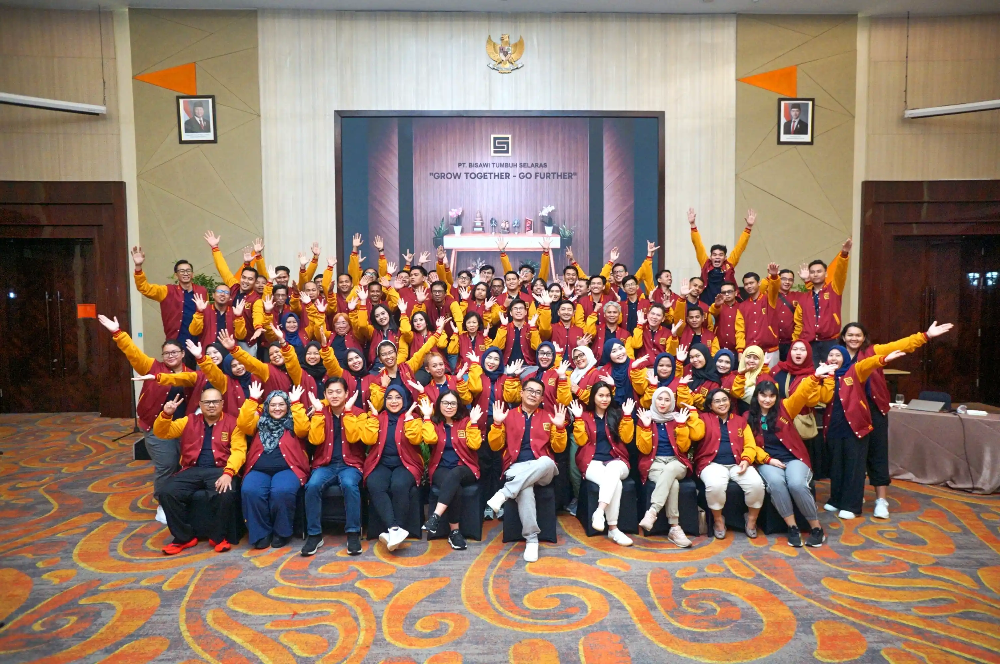
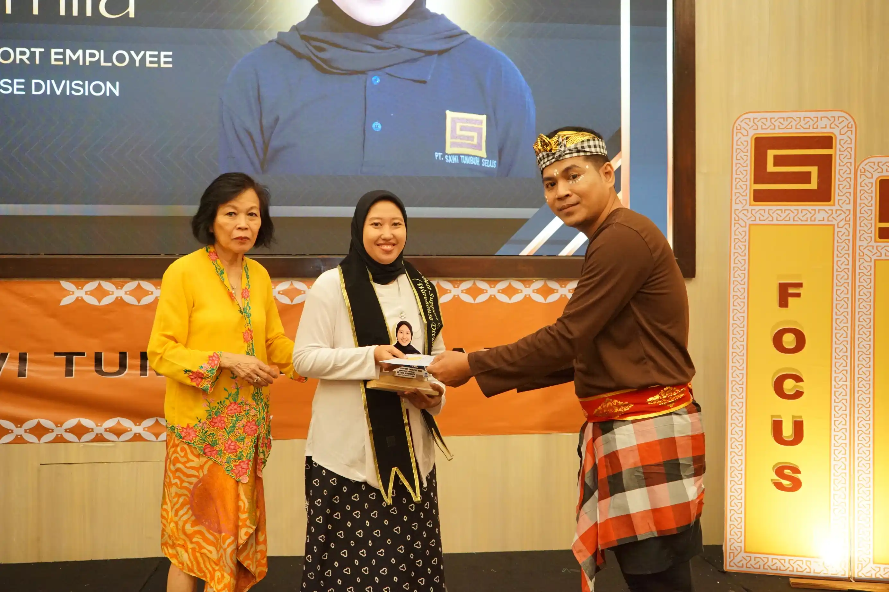

Hasil Dokumentasi
Berikut beberapa contoh hasil dokumentasi event yang telah kami tangani:




Mengabadikan Momen Event dengan Visual yang Siap Digunakan
Dokumentasi foto dan video untuk gathering, seminar, dan corporate event di Bandung.
Booking SekarangDokumentasi event di Bandung bukan hanya tentang mengambil gambar, tetapi bagaimana setiap momen dapat direkam secara terstruktur untuk kebutuhan publikasi, branding, dan arsip.
Setiap kegiatan memiliki dinamika yang berbeda, mulai dari interaksi peserta, suasana acara, hingga momen penting yang harus ditangkap dengan tepat.
Berikut beberapa contoh hasil dokumentasi event yang telah kami tangani:


Dokumentasi dilakukan langsung di lokasi dengan pendekatan berbasis aktivitas nyata. Setiap momen ditangkap secara natural tanpa rekayasa berlebihan, sehingga hasilnya dapat digunakan sebagai representasi yang autentik.
Pendekatan ini memungkinkan dokumentasi digunakan untuk kebutuhan promosi, media sosial, maupun arsip internal perusahaan.
Jika event Anda berada di area Cimahi, kami juga menyediakan layanan khusus untuk gathering dan outing perusahaan dengan fokus dokumentasi yang lebih lokal.
Lihat Jasa Event CimahiDiskusikan kebutuhan dokumentasi event Anda di Bandung sekarang.
Chat WhatsAppUntuk memahami layanan dokumentasi secara lebih luas, lihat halaman utama kami di Bandung.
Jasa Foto Video Bandung Profesional